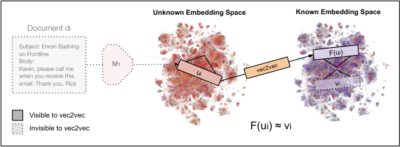
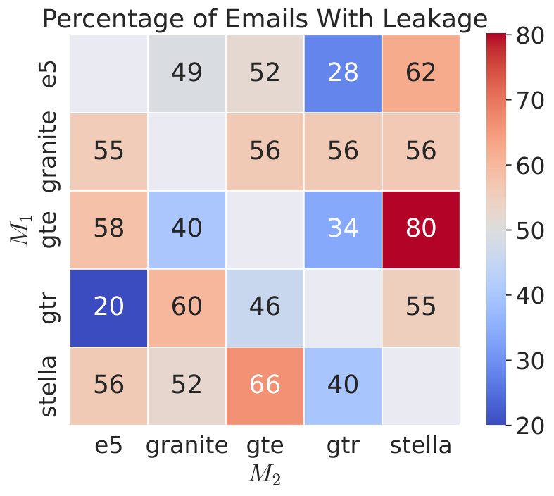

原文: arXiv:2505.12540（NeurIPS 2025） 说明: 本文为论文全文中文技术展开，公式/图表编号与原文一致；图片自 arXiv HTML 抽取（无 fig01），caption 中译；数值与表格原样保留。
预印本信息： arXiv:2505.12540v4 [cs.LG]，2026 年 1 月 26 日修订版。发表于第 39 届 NeurIPS 2025。
开源代码： https://github.com/rjha18/vec2vec （论文脚注 2 指向 GitHub，作者仓库地址）
驾驭嵌入空间的通用几何（Harnessing the Universal Geometry of Embeddings）¶
作者： Rishi Jha、Collin Zhang、Vitaly Shmatikov、John X. Morris
单位： Department of Computer Science, Cornell University（康奈尔大学计算机科学系）
主题： 跨嵌入空间的无监督翻译、强柏拉图表征假说（Strong Platonic Representation Hypothesis）、嵌入数据库的安全与隐私。
摘要（Abstract）¶
作者提出了首个能够在没有任何成对数据、编码器访问权、也没有预设匹配集合的前提下，把一个文本嵌入空间中的向量翻译到另一个空间的方法。他们的无监督方案将任何嵌入翻译进/出一个通用潜在表示（即柏拉图表征假说所猜测的普遍语义结构）。翻译在架构、参数量、训练数据完全不同的模型对之间达到很高的余弦相似度。
保留几何结构地把未知嵌入翻译到另一个空间，这一能力带来严重的安全隐患：只拿到嵌入向量数据库的攻击者，就可以恢复出关于底层文档的敏感信息，足以支撑分类与属性推断——而不必掌握生成这些向量的原始编码器。
1 引言（Introduction）¶
文本嵌入是现代 NLP 的骨架：检索、RAG、分类、聚类都建立在它之上。市面上有大量嵌入模型，它们采用不同的训练数据、数据 shuffle 顺序、参数初始化。一个好的嵌入模型应把语义相近的文本映射到向量空间相近的位置；既然语义只是文本的属性，那么同一段文本在不同模型下的嵌入理应表达一样的语义。但事实上，不同模型把文本编码进了完全不同、彼此不兼容的向量空间。
Huh 等人提出的柏拉图表征假说（Platonic Representation Hypothesis） 猜测：只要视觉模型足够大，最终都会收敛到同一份潜在表示。作者提出了一个更强、且具建构性的文本模型版本：文本表示的这一通用潜在结构不但可以被学出来，还可以被用来在不同空间之间做翻译，无需任何成对数据或编码器访问权。

图 2（原文 Figure 2）： 左侧是攻击者拿到的秘密——来自未知编码器 A 的一组文档嵌入 Embeddings of D (Encoder A)（例如泄露的向量数据库）；作者也有公开的一组，是他们用已知编码器 B 对另一批（未配对）文档 W 生成的嵌入 Embeddings of W (Encoder B)。vec2vec 由输入适配器 A1, A2、共享主干 T、输出适配器 B1, B2 组成，只用这两批互相无对应的嵌入进行对抗+循环一致训练，就能学到映射 F = B2 ∘ T ∘ A1，把 A 空间的向量翻译进 B 空间。翻译完成后，就可以在已知的 B 空间里跑现成的信息提取工具（如零样本属性推断、嵌入反演）——图中右下角展示了：某封 Enron 邮件被 vec2vec 翻译回文本时，恢复出的正是关于该邮件"NROn Employee/s Complaint To thePublic"的话题描述，与原邮件"Subject: Enron Bashing on Frontline"高度对应。这一图直接说明了**"没有配对样本 + 没有编码器 = 依然可以攻破向量数据库"** 的威胁模型。
贡献概览：
- 强柏拉图表征假说的构造性证据：给出两组来自不同模型、内容也不重叠的嵌入样本，作者的方法能学出一个潜在空间，其中两侧几乎重合（图 1）。
- vec2vec 方法：受无监督图像翻译（cycle consistency + adversarial）启发，设计基础对抗+向量空间保持的映射，把未知嵌入分布对齐到已知嵌入分布。
- 首次实现文本嵌入的无监督跨空间翻译（先前的"翻译"仅限于依赖词表重叠的跨语言词嵌入对齐；作者翻译的是整句/整段的模型级嵌入）：翻译结果与目标 ground-truth 的余弦相似度高达 0.96，8000+ 打乱嵌入的完美一一匹配。
- 信息提取实证：把 vec2vec 翻译后的嵌入喂给零样本属性推断和通用零样本嵌入反演，可以从只见嵌入的邮件里恢复出实体、金额、话题等敏感信息——由此对只暴露嵌入向量的向量数据库构成实质威胁。
2 问题定义：无监督嵌入翻译（Problem Formulation: Unsupervised Embedding Translation）¶
设攻击者拿到一批向量 \(\{u_1, \dots, u_n\}\)，每个 \(u_i = M_1(d_i)\) 由未知编码器 \(M_1: \mathcal{V}_s \to \mathbb{R}^{d_{M_1}}\) 对未知文档 \(d_i\) 生成。攻击者不能查询 \(M_1\)，也不知道 \(M_1\) 的训练数据和架构细节。目标是尽可能提取 \(d_i\) 的信息。
能用到的资源： 一个已知的编码器 \(M_2\)，可以自由查询；以及对 \(d_i\) 的分布层信息（例如："这批文档是英语文本"）。信息提取思路是：先把 \(\{u_i\}\) 翻译到 \(M_2\) 的输出空间，再用需要编码器才能跑的成熟工具（如反演模型 [67]）恢复 \(d_i\)。
为什么"匹配/对应（correspondence）"方法不够？ 已有大量把两组嵌入向量做匹配的工作 [1, 49, 8, 54]。它们通常假设两组嵌入产自同一批或高度重叠的输入——也就是说，对每一个未知向量，另一空间里都已经存在候选目标向量。攻击场景里没有这种奢侈条件。作者在实验里也表明，即使人为满足了这个假设，纯匹配方法效果仍然很差。作者的任务更难：既没有 \(M_1\) 也没有除 \(u_i\) 之外的任何 \(d_i\) 表示，只能依赖两侧空间共享的几何结构。
强柏拉图表征假说（Strong Platonic Representation Hypothesis）： 用相同目标和模态、但不同数据和架构训练出的神经网络会收敛到一个通用潜在空间；两个空间之间的翻译无需成对对应就能学出来。
翻译使得信息提取成为可能： 一旦无监督翻译问题被解决，攻击者就可以拿现有的、专门针对已知编码器的分析工具去操作原本未知的嵌入——包括嵌入反演 [43, 67]，从而恢复出未知文档 \(d_i\) 的近似文本。

图 3（原文 Figure 3）： 图中"Visible to vec2vec"（vec2vec 可见）只有一根箭头：从"Unknown Embedding Space"里的 \(u_i\) 出发，经过 vec2vec 得到"Known Embedding Space"里的 \(F(u_i)\)；虚线部分（\(d_i \to v_i\)，即用真正的 \(M_2\) 编码原文档）是看不见的目标。评估的时候，作者去度量 \(F(u_i)\) 与真实 \(v_i\) 之间的距离/排名——但训练过程中从未使用这一对齐关系，只是最终检查方法效果的"上帝视角"标尺。这个图把攻击者的假设条件（只有一堆向量、没有编码器、没有配对）表现得最清楚。
3 方法：vec2vec（Our Method: vec2vec）¶
无监督翻译在计算机视觉里已经被 CycleGAN 类方法解决过：靠循环一致性加对抗正则（cycle consistency + adversarial regularization）。vec2vec 沿用这一思路，但把 CNN 换成 MLP，把两侧空间的适配层拆开，中间用一个共享主干建"通用潜空间"。目标有两条：翻译是循环一致的（去了目标空间再回来还是原样），且两侧同文本的嵌入在潜空间中难以判别。
3.1 架构（Architecture）¶
模块化设计：
- 输入适配器 \(A_1: \mathbb{R}^d \to \mathbb{R}^Z\)、\(A_2: \mathbb{R}^d \to \mathbb{R}^Z\)，把每个模型自己的嵌入投影到维度 \(Z\) 的通用潜表示。
- 共享主干 \(T: \mathbb{R}^Z \to \mathbb{R}^Z\)，在潜空间内提取跨模型共享的语义特征。
- 输出适配器 \(B_1: \mathbb{R}^Z \to \mathbb{R}^d\)、\(B_2: \mathbb{R}^Z \to \mathbb{R}^d\)，把潜表示再投回各模型自己的空间。
于是翻译映射 \(F_1, F_2\) 和重构映射 \(R_1, R_2\) 定义为：
所有可训练参数记作 \(\theta = \{A_1, A_2, T, B_1, B_2\}\)。
为什么不是 CNN？ 嵌入向量没有图像那样的空间偏置，作者用带残差、LayerNorm、SiLU 非线性的多层 MLP。判别器结构对称，但不带残差，以简化对抗训练。
3.2 优化（Optimization）¶
在生成器 \(F, R\) 之外，作者对潜空间（\(D_1^\ell, D_2^\ell\)）和输出嵌入空间（\(D_1, D_2\)）各引入一组判别器。总目标是极小-极大：
对抗损失： 把标准 GAN 损失同时套在输出嵌入层和潜表示层：
它让生成的嵌入在分布层面上与真实目标空间不可区分。
生成器辅助损失： 只有对抗损失不足以保证语义保留，作者叠加三条约束。
（i）重构（Reconstruction）：把嵌入映到潜空间再映回原空间，必须几乎不变：
其中 \(p, q\) 分别是 \(M_1, M_2\) 输出嵌入的分布。
（ii）循环一致（Cycle-consistency）：无监督地"替代"配对对齐——把一个嵌入翻译到对面再翻回来，应该几乎回到自己：
（iii）向量空间保持（Vector Space Preservation, VSP）：翻译要保持批内向量的两两内积几何，防止模式塌缩到孤立点。对一批 \(x_1, \dots, x_B\) 与 \(y_1, \dots, y_B\)：
合成生成器损失：
三个 \(\lambda\) 控制各分量的相对权重，具体值在附录中给出。
一句话总结："对抗对齐分布 + 循环一致做无监督成对代理 + VSP 保留内积几何" 是把不同空间粘到同一潜表示上的三根钉子。
4 实验设置（Experimental Setup）¶
4.1 数据与模型（Preliminaries）¶
训练/评测数据： Natural Questions (NQ) 的用户问题+维基百科段落对——训练用 200 万子集，评测用 65,536 子集。
属性推断评测：
- TweetTopic：19 类多标签推特语料。
- Pseudo Re-identified MIMIC-III (MIMIC)：伪重标识病历库随机 8,192 条，多标签为 2,673 种 MedCAT 疾病描述。
- Enron Email Corpus (Enron)：无标签的公司内部邮件 50 封随机子集。
附录 D 中还在 MS COCO 上做多模态检索消融。
编码器矩阵： 表 1 给出了训练/评测使用的嵌入模型阵列，覆盖 4 个规模档位、5 种 Transformer 骨干、2 种输出维度，涵盖多语言（Granite）与多模态（CLIP）。
表 1：实验中使用的嵌入模型
| 模型 | 参数量 (M) | 骨干 | 年份 | 维度 | 最大序列 |
|---|---|---|---|---|---|
| gtr [47] | 110 | T5 | 2021 | 768 | 512 |
| clip [50] | 151 | CLIP | 2021 | 512 | 77 |
| e5 [58] | 109 | BERT | 2022 | 768 | 512 |
| gte [32] | 109 | BERT | 2023 | 768 | 512 |
| stella [68] | 109 | BERT | 2023 | 768 | 512 |
| granite [14] | 278 | RoBERTa | 2024 | 768 | 512 |
| qwen [69] | 4000 | Qwen3 | 2025 | 2560 | 32K |
训练细节： 除非另说，每个 vec2vec 都用两组各 100 万条、来自 NQ 且互不重叠的 64-token 序列嵌入训练。因 GAN 训练不稳，作者跑多次初始化取最好一次（附录 E）。Qwen 因算力昂贵仅在附录 C 里跑一个模型对。
4.2 翻译评测指标（Evaluating Translation）¶
设 \(u_i = M_1(d_i)\)，\(v_i = M_2(d_i)\)。翻译目标是让 \(F(u_i)\) 尽可能接近 \(v_i\)。若 \(F\) 输出对候选池中 \(v_j\) 最相似，则称 \((u_i, v_j)\) 被"对齐（aligned）"：\(j = \arg\min_k \cos(F(u_i), v_k)\)。理想翻译器 \(F^*\) 应对所有 \(i\) 都对齐到自身。
三项指标：
- Mean Cosine Similarity（平均余弦相似度）：翻译向量与目标 \(v_i\) 的平均相似度。
- Top-1 Accuracy：翻译目标是最相近向量的比例。
- Mean Rank：目标 \(v_i\) 在按相似度排序中的平均排名。理想为 1.0；随机排名对应 \(n/2\)。
Baselines： vec2vec 是首个无监督嵌入翻译器，没有直接可比对手。作者用两条参照线：
- Naïve baseline：直接 \(F(x) = x\)，测两空间原生几何相似度。
- Oracle-aided Optimal Transport (OT)：准基线——OT 已假设候选目标已知（相当于比 vec2vec 与 Naïve 都作弊），跑最优指派 \(\pi^* = \arg\min_\pi \sum_{i=1}^n \cos(u_i, v_{\pi(i)})\)。求解器从 Hungarian、EMD、Sinkhorn、（Entropic）Gromov-Wasserstein 里挑排名最低的一个。
4.3 信息提取评测（Evaluating Information Extraction）¶
零样本属性推断： 计算 \(F(M_1(d_i))\) 与所有属性 \(C\) 的嵌入的余弦相似度，取 Top-\(k\)；若含正确属性即算命中，度量 top-\(k\) accuracy: \(\frac{1}{n}\sum_i \mathbf{1}\{|c_i^k \cap c_i| \geq 1\}\)。
嵌入反演（Embedding Inversion）： 用通用零样本反演器 [67]（不需要为每个空间预训一个专用反演模型）把 \(F(M_1(d_i))\) 反演回文本近似 \(d_i'\)；再用 GPT-4o 作评判（judge accuracy）——只有当 GPT-4o 判定 \(d_i'\) 泄露出了 \(d_i\) 里的实际信息，才算成功。附录 H 给出 prompt。
同时作为对照，作者引入 Oracle attribute inference：直接用真正的 \(M_2(d_i)\) 与 \(M_2(C)\) 做零样本分类——这是把两侧空间的上限画出来。
5 vec2vec 学到通用潜空间与几何保持（vec2vec Learns to Translate Without Any Paired Data）¶

图 4（原文 Figure 4）： 左边热力图是原始输入空间里五组不同模型（e5、granite、gte、gtr、stella）之间的两两余弦相似度——例如 e5-granite 只有 0.02、gte-gtr 只有 -0.02，说明两个模型对同一批文本给出的向量在几何上几乎正交、彻底不兼容（同架构对如 gte-stella 是 0.68，稍好但依旧不算相近）。中间图是把每一批嵌入都过一次 vec2vec 的 \(T \circ A_i\) 进入通用潜空间后的两两相似度——所有单元格都跳到 0.75-0.96，说明vec2vec 学到了让不同模型的嵌入在潜空间里高度对齐。右边图是"中 - 左"的差值：跨骨干对（如 e5-gtr 0.72、granite-gtr 0.86）差值最大，代表 vec2vec 为它们建起了最陡的语义桥；同骨干对（如 gte-stella 只差 0.40）本身已经很接近，vec2vec 主要做的是"再拉近一点点"。这是强柏拉图表征假说最直观的证据——潜在通用语义空间是"可学出来"的。
5.1 主结果：翻译在源空间内测（In-distribution）¶
表 2（NQ 内测，65,536 条 / 每批 8192 条；Rank 范围 1-8192，4096 = 随机）：
| \(M_1\) | \(M_2\) | vec2vec cos↑ | T-1↑ | Rank↓ | Naïve cos↑ | T-1↑ | Rank↓ | OT cos↑ | T-1↑ | Rank↓ |
|---|---|---|---|---|---|---|---|---|---|---|
| gra. | gtr | 0.80 | 0.99 | 1.19 | -0.03 | 0.00 | 4168.73 | 0.70 | 0.00 | 2773.72‡ |
| gra. | gte | 0.87 | 0.95 | 1.18 | 0.01 | 0.00 | 4088.58 | 0.85 | 0.00 | 2680.02‡ |
| gra. | ste. | 0.79 | 0.98 | 1.05 | 0.01 | 0.00 | 4208.26 | 0.67 | 0.00 | 3446.52‡ |
| gra. | e5 | 0.85 | 0.98 | 1.11 | 0.02 | 0.00 | 4111.60 | 0.83 | 0.00 | 3569.59‡ |
| gtr | gra. | 0.81 | 0.99 | 1.02 | -0.03 | 0.00 | 4169.76 | 0.70 | 0.00 | 2775.17‡ |
| gtr | gte | 0.87 | 0.93 | 2.31 | 0.04 | 0.00 | 4080.92 | 0.85 | 0.00 | 3070.69‡ |
| gtr | ste. | 0.80 | 0.99 | 1.03 | 0.00 | 0.00 | 4198.78 | 0.67 | 0.00 | 3559.06‡ |
| gtr | e5 | 0.83 | 0.84 | 2.88 | 0.03 | 0.00 | 4082.84 | 0.83 | 0.00 | 3888.01‡ |
| gte | gra. | 0.75 | 0.95 | 1.22 | 0.01 | 0.00 | 4079.81 | 0.69 | 0.00 | 2664.38‡ |
| gte | gtr | 0.75 | 0.91 | 2.64 | 0.04 | 0.00 | 4084.15 | 0.70 | 0.00 | 3064.16‡ |
| gte | ste. | 0.89 | 1.00 | 1.00 | 0.56 | 1.00 | 1.00 | 0.71 | 1.00 | 1.00† |
| gte | e5 | 0.87 | 0.99 | 5.19 | 0.68 | 1.00 | 1.00 | 0.84 | 1.00 | 1.00† |
| ste. | gra. | 0.80 | 0.98 | 1.08 | 0.01 | 0.00 | 4209.08 | 0.69 | 0.00 | 3419.44‡ |
| ste. | gtr | 0.82 | 1.00 | 1.10 | 0.00 | 0.00 | 4192.31 | 0.70 | 0.00 | 3555.64‡ |
| ste. | gte | 0.92 | 1.00 | 1.00 | 0.56 | 1.00 | 1.00 | 0.87 | 1.00 | 1.00† |
| ste. | e5 | 0.86 | 1.00 | 1.00 | 0.38 | 0.99 | 1.03 | 0.83 | 1.00 | 1.00† |
| e5 | gra. | 0.81 | 0.99 | 2.20 | 0.02 | 0.00 | 4120.60 | 0.69 | 0.00 | 3526.02‡ |
| e5 | gtr | 0.74 | 0.82 | 2.56 | 0.03 | 0.00 | 4080.76 | 0.70 | 0.00 | 3877.03‡ |
| e5 | gte | 0.90 | 1.00 | 1.01 | 0.68 | 1.00 | 1.00 | 0.86 | 1.00 | 1.00† |
| e5 | ste. | 0.78 | 1.00 | 1.00 | 0.38 | 1.00 | 1.00 | 0.69 | 1.00 | 1.00† |
（†：Sinkhorn；‡：Gromov-Wasserstein）
关键读点：
- 跨骨干对（cross-backbone）（例如 granite-gtr、gtr-e5）：Naïve baseline 完全随机（Rank ~ 4100），Oracle OT 也只把 Rank 降到 2700-3800（甚至更差）；vec2vec 直接把 Rank 打到 1-3，Top-1 常年 0.9+。
- 同骨干对（same-backbone）（如 gte-stella、gte-e5）：几何本来就接近，Naïve 就能拿到 Top-1=1.0；vec2vec 依然并列或超过。
- 平均余弦 最高 0.92（stella-gte），跨骨干对普遍 0.8+；Top-1 最高 1.00，8192 条打乱嵌入里能一一匹配。
5.2 翻译的几何保持（Translations Mirror Target Geometry）¶
图 4 已经量化说明：vec2vec 潜空间中不同模型间的相似度矩阵几乎相等；也就意味着翻译不是"点对点碰运气"，而是把整体几何搬过去了。图 1（作者原文两张 UMAP 2D 投影）把 gte 和 gtr 的原嵌入画在一起——彼此远远拉开；而它们的 vec2vec 潜表示几乎完全重叠。这就是"通用潜表示可以学出来"的可视化定论。
5.3 跨分布评测（Out-of-Distribution）¶
表 3（vec2vec 在 NQ 上训练，直接在完全不同分布的 TweetTopic 800 条推特、MIMIC-III 8192 条病历上评测；Rank 上限分别 800 与 8192）：
| \(M_1\) | \(M_2\) | TweetTopic cos↑ | T-1↑ | Rank↓ | MIMIC cos↑ | T-1↑ | Rank↓ |
|---|---|---|---|---|---|---|---|
| gran. | gtr | 0.74 | 0.99 | 1.09 | 0.74 | 0.60 | 23.38 |
| gran. | gte | 0.85 | 0.95 | 1.26 | 0.85 | 0.08 | 346.21 |
| gran. | stel. | 0.77 | 0.96 | 1.11 | 0.72 | 0.13 | 242.23 |
| gran. | e5 | 0.83 | 0.87 | 3.10 | 0.84 | 0.12 | 361.06 |
| gtr | gran. | 0.79 | 0.98 | 2.41 | 0.78 | 0.51 | 35.27 |
| gtr | gte | 0.85 | 0.96 | 1.29 | 0.84 | 0.12 | 279.56 |
| gtr | stel. | 0.77 | 0.96 | 1.10 | 0.72 | 0.27 | 127.92 |
| gtr | e5 | 0.80 | 0.53 | 13.38 | 0.82 | 0.01 | 1413.80 |
| gte | gran. | 0.73 | 0.94 | 1.33 | 0.73 | 0.09 | 342.15 |
| gte | gtr | 0.71 | 0.95 | 1.29 | 0.69 | 0.12 | 256.63 |
| gte | stel. | 0.86 | 1.00 | 1.00 | 0.85 | 1.00 | 1.00 |
| gte | e5 | 0.83 | 0.91 | 1.57 | 0.86 | 0.54 | 17.71 |
| stel. | gran. | 0.79 | 0.99 | 1.09 | 0.77 | 0.14 | 221.95 |
| stel. | gtr | 0.77 | 1.00 | 1.00 | 0.75 | 0.56 | 17.70 |
| stel. | gte | 0.90 | 1.00 | 1.00 | 0.91 | 1.00 | 1.00 |
| stel. | e5 | 0.85 | 0.98 | 1.05 | 0.85 | 0.51 | 26.33 |
| e5 | gran. | 0.79 | 0.98 | 1.08 | 0.78 | 0.21 | 151.09 |
| e5 | gtr | 0.67 | 0.80 | 3.10 | 0.66 | 0.01 | 1029.64 |
| e5 | gte | 0.87 | 0.99 | 1.02 | 0.87 | 0.60 | 32.59 |
| e5 | stel. | 0.75 | 0.98 | 1.06 | 0.75 | 0.46 | 32.12 |
关键读点： 尽管训练分布是维基百科式问答，vec2vec 在充满 emoji 的推特和医学术语密集的病历上依然稳定：绝大多数模型对的 TweetTopic Top-1 都在 0.9+；MIMIC 里 rank 会飙升到几百（因为 8192 条医学记录里同类高度扎堆，且 MedCAT 疾病术语远离 NQ 分布），但同骨干对依旧保持 Top-1 = 1.00，跨骨干对也把 rank 从随机的 4096 挤到几十至几百。附录 F 显示 Naïve/OT baseline 在跨骨干、跨分布场景下几乎完全垮掉。
5.4 单模态 ↔ 多模态（CLIP）翻译（Table 4）¶
表 4（vec2vec 把 CLIP 嵌入与单模态文本嵌入互译；Rank 范围 1-8192，随机 = 4096；由于维度不同 CLIP=512，只跑 Gromov-Wasserstein OT baseline，Naïve baseline 不适用）：
| \(M_1\) | \(M_2\) | vec2vec cos↑ | T-1↑ | Rank↓ | OT cos↑ | T-1↑ | Rank↓ |
|---|---|---|---|---|---|---|---|
| gra. | clip | 0.78 | 0.35 | 226.62 | 0.76 | 0.00 | 4073.58‡ |
| gtr | clip | 0.73 | 0.13 | 711.23 | 0.59 | 0.00 | 4096.78‡ |
| gte | clip | 0.62 | 0.00 | 3233.41 | 0.76 | 0.00 | 4026.96‡ |
| ste. | clip | 0.77 | 0.31 | 286.69 | 0.76 | 0.00 | 3955.71‡ |
| e5 | clip | 0.64 | 0.01 | 2568.21 | 0.77 | 0.00 | 3771.52‡ |
| clip | gra. | 0.74 | 0.72 | 4.46 | 0.69 | 0.00 | 4053.11‡ |
| clip | gtr | 0.67 | 0.27 | 155.11 | 0.49 | 0.00 | 4096.35‡ |
| clip | gte | 0.75 | 0.00 | 2678.90 | 0.85 | 0.00 | 4025.81‡ |
| clip | ste. | 0.72 | 0.61 | 22.50 | 0.67 | 0.00 | 3951.73‡ |
| clip | e5 | 0.73 | 0.01 | 1692.28 | 0.83 | 0.00 | 3771.38‡ |
读点： 效果整体不如纯文本对（因为 CLIP 一半参数是图像监督下训练的），但依旧全面吊打 OT baseline，且部分方向（如 clip → granite 的 Rank 4.46）依然接近完美。作者据此推断：通用潜几何在多模态上也存在——考虑到 CLIP 的嵌入空间早已被 ImageBind [12] 桥接到音频、深度图等模态上，vec2vec 有望进一步串起更多模态。
6 用 vec2vec 翻译做信息提取（Using vec2vec Translations to Extract Information）¶
翻译只是手段。真正的隐私影响，来自把翻译后的向量喂进现成的信息提取工具后能撬出多少东西。
6.1 零样本属性推断（Zero-shot Attribute Inference）¶
表 5（TweetTopic top-1、MIMIC top-10 属性推断准确率；vec2vec 训练分布是 NQ）：
| \(M_1\) | \(M_2\) | Tweet vec2vec | Tweet Naïve | Tweet \(M_1\) ideal | Tweet \(M_2\) ideal | MIMIC vec2vec | MIMIC Naïve | MIMIC \(M_1\) ideal | MIMIC \(M_2\) ideal |
|---|---|---|---|---|---|---|---|---|---|
| gran. | gtr | 0.25 | 0.10 | 0.30 | 0.24 | 0.19 | 0.11 | 0.76 | 0.88 |
| gran. | gte | 0.32 | 0.09 | 0.30 | 0.34 | 0.36 | 0.13 | 0.76 | 1.00 |
| gran. | stel. | 0.24 | 0.10 | 0.30 | 0.28 | 0.27 | 0.04 | 0.76 | 0.96 |
| gran. | e5 | 0.31 | 0.18 | 0.30 | 0.31 | 0.19 | 0.20 | 0.76 | 0.97 |
| gtr | gran. | 0.34 | 0.08 | 0.24 | 0.30 | 0.16 | 0.12 | 0.88 | 0.76 |
| gtr | gte | 0.33 | 0.13 | 0.24 | 0.34 | 0.28 | 0.05 | 0.88 | 1.00 |
| gtr | stel. | 0.30 | 0.10 | 0.24 | 0.28 | 0.25 | 0.07 | 0.88 | 0.96 |
| gtr | e5 | 0.30 | 0.04 | 0.24 | 0.31 | 0.09 | 0.09 | 0.88 | 0.97 |
| gte | gran. | 0.37 | 0.04 | 0.34 | 0.30 | 0.18 | 0.11 | 1.00 | 0.76 |
| gte | gtr | 0.24 | 0.13 | 0.34 | 0.24 | 0.10 | 0.03 | 1.00 | 0.88 |
| gte | stel. | 0.31 | 0.20 | 0.34 | 0.28 | 0.68 | 0.83 | 1.00 | 0.96 |
| gte | e5 | 0.37 | 0.30 | 0.34 | 0.31 | 0.37 | 0.63 | 1.00 | 0.97 |
| stel. | gran. | 0.35 | 0.07 | 0.28 | 0.30 | 0.23 | 0.09 | 0.96 | 0.76 |
| stel. | gtr | 0.26 | 0.13 | 0.28 | 0.24 | 0.22 | 0.09 | 0.96 | 0.88 |
| stel. | gte | 0.38 | 0.36 | 0.28 | 0.34 | 0.90 | 0.98 | 0.96 | 1.00 |
| stel. | e5 | 0.35 | 0.34 | 0.28 | 0.31 | 0.38 | 0.46 | 0.96 | 0.97 |
| e5 | gran. | 0.33 | 0.15 | 0.31 | 0.30 | 0.14 | 0.07 | 0.97 | 0.76 |
| e5 | gtr | 0.26 | 0.22 | 0.31 | 0.24 | 0.11 | 0.04 | 0.97 | 0.88 |
| e5 | gte | 0.34 | 0.28 | 0.31 | 0.34 | 0.47 | 0.66 | 0.97 | 1.00 |
| e5 | stel. | 0.26 | 0.16 | 0.31 | 0.28 | 0.36 | 0.40 | 0.97 | 0.96 |
读点：
- 在 TweetTopic 上，vec2vec 翻译后的属性推断准确率一致高于 Naïve baseline，并常常逼近甚至超过"用真编码器 \(M_1/M_2\) 做的理想零样本"（如 gte→e5 vec2vec 0.37 vs \(M_1\) 0.34 / \(M_2\) 0.31）。
- 在 MIMIC 上，属性池是 2673 种 MedCAT 疾病描述，绝大部分从未出现在 NQ 训练数据中。vec2vec 在同骨干对上打平 baseline，在跨骨干对上大幅超越 Naïve（如 gtr→gte MIMIC 0.28 vs Naïve 0.05；e5→gte 0.47 vs Naïve 0.66，接近后者理想）。
- 结论：vec2vec 潜空间保留了从未见过的语义——"alveolar periostitis（牙槽骨膜炎）"这种训练里根本没出现的词，翻译后仍能被检索到对应属性。这说明它学到的不是词汇映射，而是通用语义几何。
6.2 零样本反演（Zero-shot Inversion）¶
反演比属性推断更进一步：直接恢复原文。作者拿现成的通用零样本反演器 [67]，只提供 vec2vec 翻译后的向量。

图 5（原文 Figure 5）： 5x5 热力图，行是 \(M_1\)（未知目标编码器）、列是 \(M_2\)（攻击者已知编码器）。数值范围 20-80%——最高格子（gte → gtr 与 stella → gtr 分别 62% 与 66%，e5 → stella 也到 66%）意味着攻击者不知道向量原来是哪个模型产的，也能从 50 封 Enron 邮件里恢复到 66% 泄露率。作者在正文中报告：最高达到 80% 的邮件、67% 的推特在部分模型对上被 GPT-4o 判定"反演结果确实泄露了原文信息"。同骨干对（如 gte-stella）泄露最重，正对应几何相似度最高的组合；即使跨骨干（如 e5→gtr）也保持在 20-40%，仍属显著隐私风险。这一张图把"只要拿到嵌入数据库，就能读出邮件话题"这一威胁定量化，是全篇最刺激的隐私实证。
图 6（原文 Figure 6，PDF 页 9 中示例） 给出三条 Enron 邮件的原文对照（Ground Truth）与 vec2vec 翻译 + 反演出的生成文本（Generation）：
- Ground Truth: "Subject: Enron Bashing on Frontline \n Body:..." → Generation: "Some emails discussing NROn Employee/s Complaint To thePublic ..."
- Ground Truth: "Subject: Trades for 3/1/02 \n Body: \n John , \n The following trades..." → Generation: "... future transactions may await John G..."
- Ground Truth: " The following expense report is ready for approval..." → Generation: " The upcoming expense statement from YYYY MM Dec..."
反演结果并不字面精确（Enron→NROn 已是笔误级别的形近字），但主题、人物名、事务类型、日期结构都被准确恢复——足以让攻击者在只见嵌入的场景下推断出：这是关于 Enron 被公开抨击的邮件 / John 相关的交易记录 / 待审批的报销单。作者明确写道：即使当前反演器远不完美，vec2vec 已足够撬出个人姓名、公司名、日期、促销、财务信息、事故、甚至午餐订单等敏感内容。
对向量数据库安全的直接含义： 在生产系统里，很多团队把 embedding 数据库当作"脱敏后的向量"存储；vec2vec 说明——只要攻击者能查一个不同的、公开的编码器 \(M_2\)，就能反推出原文档大意，等同于文本泄露。
7 消融与训练数据规模（Ablations）¶
7.1 每个组件都有必要（表 6）¶
表 6（gte → gtr 翻译器，NQ 训练，65,536 NQ 子集评测；Rank 范围 1-8192）：
| 方法 | cos↑ | T-1↑ | Rank↓ |
|---|---|---|---|
| vec2vec（完整） | 0.75 | 0.91 | 2.64 |
| Naïve baseline | 0.04 | 0.00 | 4084.15 |
| OT baseline | 0.70 | 0.00 | 3064.16 |
| – VSP 损失 | 0.58 | 0.00 | 4196.64 |
| – CC 损失 | 0.50 | 0.00 | 3941.36 |
| – 潜空间 GAN | 0.49 | 0.00 | 3897.09 |
| – VSP + CC 都去掉 | 0.47 | 0.00 | 3365.24 |
| – 超参搜索（用默认超参） | 0.50 | 0.00 | 4011.73 |
读点： 只要去掉任何一条辅助损失，Top-1 立刻掉到 0.00、Rank 飙到近随机——说明 对抗+循环一致+VSP+潜空间对抗 是缺一不可的四件套；纯对抗给不了足够信号，纯 OT 又拿不到几何。
7.2 数据规模：几万条即可起作用（表 7）¶
表 7（gte → gtr，GTR 侧固定 100 万条，GTE 侧从 1 万到 100 万；NQ 8192 子集评测）：
| \(N\)（GTE 嵌入条数） | cos↑ | T-1↑ | Rank↓ |
|---|---|---|---|
| 1,000,000 | 0.75 | 0.92 | 2.73 |
| 10,000 | 0.57 | 0.01 | 1462.21 |
| 50,000 | 0.74 | 0.81 | 3.91 |
| 100,000 | 0.74 | 0.85 | 4.52 |
| 500,000 | 0.75 | 0.92 | 2.73 |
读点： 1 万条就能显著优于随机（Rank 1462 vs 4096）；5 万条几乎追平百万条（Rank 3.91 vs 2.73）——攻击门槛惊人地低。这意味着即便攻击者只能爬到少量嵌入样本，也能训一个够用的翻译器。
8 相关工作（Related Work）¶
表示对齐（Representation Alignment）： 度量不同网络表示相似度的工作包括 CCA [42]、SVCCA [51]、CKA [23, 38]、ICA [63]、时间序列 [39]、GUI 可视化 [16]。零样本 stitching / substitution / domain transfer / 多模态适配 [37, 45, 40, 57, 48] 都基于表示相似性——但它们几乎都要成对数据。vec2vec 不只是度量相似，而是学到跨空间的翻译，全程无配对。
最优传输（Optimal Transport）： 无监督 OT 已用于图像风格迁移 [17, 36, 70]、跨语言词翻译 [62, 10, 15, 9, 20]、无监督机器翻译 [52, 27, 1, 4, 64, 3]。vec2vec 沿用"循环一致 + 对抗"的框架，但关键差异在于：过去的词/句翻译工作都能借助"同一个输入的多种表示"（词表大量重叠），vec2vec 没有这个便利。[54] 的 "Blind Match" 只做小集合匹配，而 vec2vec 是生成整个新空间里的对应向量。
嵌入反演（Embedding Inversion）： 从嵌入解码文本的方向有 [55, 29, 43]，从模型输出反推有 [44, 7, 66]。vec2vec 让这些工具能应用到未知编码器——先把未知嵌入翻译到已知空间，再让专用反演器发力。
模态桥接： [33] 揭示图像与文本嵌入间存在"模态鸿沟"，随后 [56] 综述统一模态方法；ImageBind [12] 把音频、深度、热图等接入 CLIP 空间。vec2vec 属于事后（post-hoc） 桥接：不需要重新训一个统一模型，直接翻译已有嵌入，与前述工作是互补关系。
9 讨论与未来工作（Discussion and Future Work）¶
作者主张的强柏拉图表征假说是：文本表示的通用潜在结构可以被学习并利用，跨表示的翻译无需编码器或成对数据。
- 第 5 节证明：vec2vec 在未见文档、未见编码器上都能翻译，甚至对分布外的推特、病历依然稳健——说明它捕捉到的是跨域的几何本质。
- 第 6 节证明：翻译保留了足够的语义，可以支撑属性推断和文本反演；只见嵌入的攻击者已能从病历里读出疾病、从邮件里读出人物金额与话题——"嵌入几乎泄露了和文本一样多的信息" 在跨模型场景下同样成立。
- CLIP 初步结果表明这一现象不限于文本模态——通用几何很可能在多模态里也成立。
局限与未来： vec2vec 建立的是下界——训练更稳定的算法、更好的架构、更多样的模型对，能推得翻译更精确、恢复更彻底。作者建议后续工作专门为"翻译后的嵌入"训练专用反演模型，并探索更多模态对（音频、视频、图像与文本互译）。
关键洞察串讲：向量数据库不再是"脱敏"存储¶
- 过去的默认心智模型：把文本 embedding 存进向量数据库 = 语义摘要，只有拿着同一个编码器才能查询/反演；泄露一份 embedding dump 相当于泄露了一份"打乱字典的密文"。
- vec2vec 打破的假设：不同编码器彼此几何隔绝这件事是假象——训练目标+语言分布相同时，它们收敛到同一个潜在语义几何。
- 实操攻击链：拿到未知模型 \(M_1\) 的 embedding dump → 用任意公开编码器 \(M_2\) 生成一大堆已知嵌入 → 训 vec2vec（1M 甚至 5 万条即可）→ 翻译 dump → 用零样本反演器/属性推断从 \(M_2\) 空间读出原文。
- 在需要严肃对待的场景：企业内部 RAG、医疗记录检索、代码/邮件嵌入索引，若只在 access control 层保护向量，一次数据库泄露就等价于一次文本泄露。防御思路（作者未展开）：加噪、维度扰动、把嵌入绑定到检索时才计算的密钥空间——但都需要在效用与安全间做权衡。
术语翻译约定¶
| 英文原词 | 中文译法 |
|---|---|
| Embedding | 嵌入（向量） |
| Encoder | 编码器 |
| Unsupervised (embedding) translation | 无监督（嵌入）翻译 |
| Paired data / paired samples | 成对数据 / 成对样本 |
| Latent (representation) space | 潜（表示）空间 / 潜在空间 |
| Universal latent structure | 通用潜在结构 |
| Platonic Representation Hypothesis | 柏拉图表征假说 |
| Strong Platonic Representation Hypothesis | 强柏拉图表征假说 |
| Cycle consistency | 循环一致（性） |
| Adversarial loss / training | 对抗损失 / 对抗训练 |
| Vector Space Preservation (VSP) | 向量空间保持 |
| Reconstruction loss | 重构损失 |
| Discriminator | 判别器 |
| Generator | 生成器 |
| Optimal Transport (OT) | 最优传输 |
| Gromov-Wasserstein / Sinkhorn / EMD | 分别音译/术语保留 |
| Attribute inference | 属性推断 |
| Embedding inversion | 嵌入反演 |
| Zero-shot | 零样本 |
| Modality gap | 模态鸿沟 |
| Backbone | 骨干（网络） |
| In-distribution / Out-of-distribution (OOD) | 分布内 / 分布外 |
| Top-1 Accuracy / Mean Rank / Mean Cosine Similarity | Top-1 准确率 / 平均排名 / 平均余弦相似度 |
| Vector database | 向量数据库 |